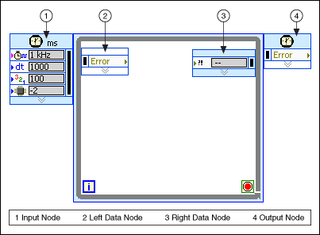
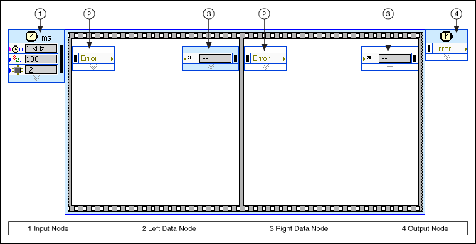

Characteristics of Timed Structures (Real-Time, Windows)
All timed structures share the following characteristics:
A resizable border to enclose a section of the block diagram code, also called a subdiagram
Input and Output nodes that provide configuration data and return error and timing information
Tunnels on the structure border that feed data into and out of the structure subdiagrams
The following image shows a Timed Loop on the block diagram.

The iteration terminal, shown as follows, is an output terminal that returns the number of completed iterations.
The conditional terminal, shown as follows, is an input terminal. You can pass a Boolean value to the conditional terminal to stop a timed structure from running.
The following image shows a Timed Sequence structure on the block diagram.

As the images show, Timed Loops and Timed Sequence structures contain similar nodes. The following information describes the various nodes on a timed structure.
Note��You can use nodes to configure a Timed structure. You also can configure a Timed structure with various configuration dialog boxes. However, the configuration dialog boxes give you less precise control over the configuration options of a timed structure. For more advanced applications, you can use the configuration nodes, which provide additional configuration options.
Wire data to the Input node to configure the Timed structure. You also can right-click the Input node and select
Configure Input Node from the shortcut menu to display the Configure Timed Loop dialog box.
The Left Data node returns configuration option values and provides timing information about the current or previous loop iteration or frame.
The Output node returns error information from the Error input of the Input node, error information generated by the structure during execution, and error information from the subdiagrams that execute within the Timed Loop frames. The Output node also returns timing and status information for the final loop iteration or frame.
Note��By default, nodes of a timed structure do not display all of the available input and output terminals. You can resize nodes or right-click a node and use the shortcut menu to display hidden node terminals.